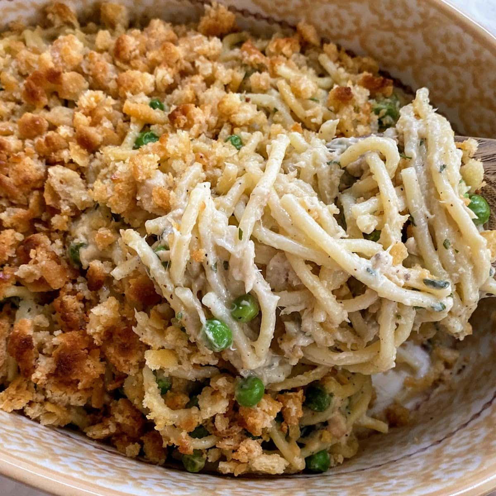

Spaghetti Tuna

If you love traditional tuna casserole, you will love our spaghetti tuna casserole recipe! This simple dish is packed with flavor and perfect for busy weeknights. Even better, you probably have most of the ingredients in your pantry or fridge already! Make this dish in 28 minutes or less!
Ingredients
- Frozen Peas
- Parmesan
- Butter
- Spaghetti
- Cream of Mushroom Soup
- Chicken Broth
- Parsley, Salt and Pepper
- Tuna
- Crackers
Recipe
- Turn on broiler and spray a 1.5-2 quart casserole dish with cooking spray and set aside. Kid Step: Spray casserole dish! This is a fun task for kids.
- Cook noodles in chicken broth (don't drain when done cooking). Kid Step: Taste test! Ask kids to taste the noodles to check and see if they are done cooking.
- Combine cooked spaghetti with cream of mushroom soup, peas, tuna seasoning and cheese. Move combined ingredients to casserole dish. Kid Step: Open up the cans of soup and tuna and pour them into the pot!
- Add melted butter to crushed crackers, spread on top of casserole and broil for 3-5 minutes. Kid Step: Crush crackers! This hands-on and messy task is a hit with little ones!
Main page